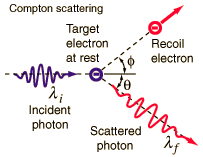
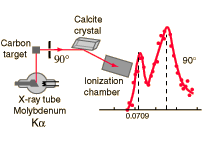

|
  |
Compton ScatteringArthur H. Compton observed the scattering of x-rays from electrons in a carbon target and found scattered x-rays with a longer wavelength than those incident upon the target. The shift of the wavelength increased with scattering angle according to the Compton formula:  Compton explained and modeled the data by assuming a particle (photon) nature for light and applying conservation of energy and conservation of momentum to the collision between the photon and the electron. The scattered photon has lower energy and therefore a longer wavelength according to the Planck relationship. |
At a time (early 1920's) when the particle (photon) nature of light suggested by the photoelectric effect was still being debated, the Compton experiment gave clear and independent evidence of particle-like behavior. Compton was awarded the Nobel Prize in 1927 for the "discovery of the effect named after him".
| Calculation | Compton scattering experiment | Develop formula |
Great experiments of physics
Reference:
Compton
| HyperPhysics***** Quantum Physics | R Nave |